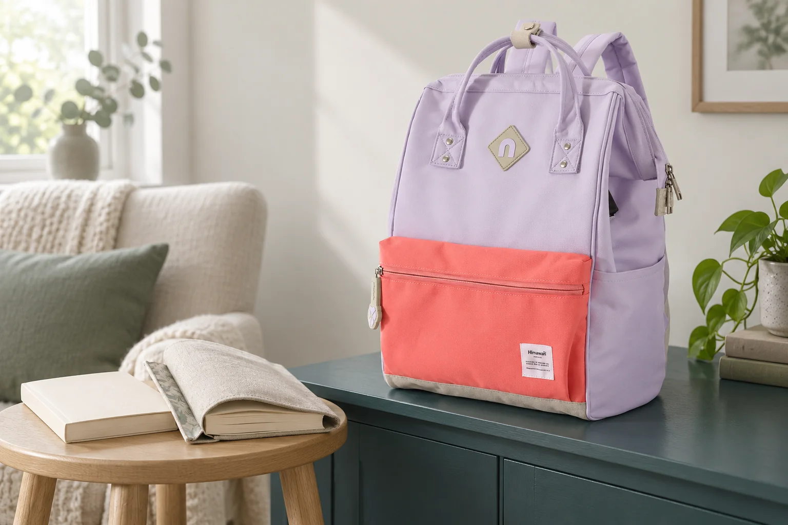
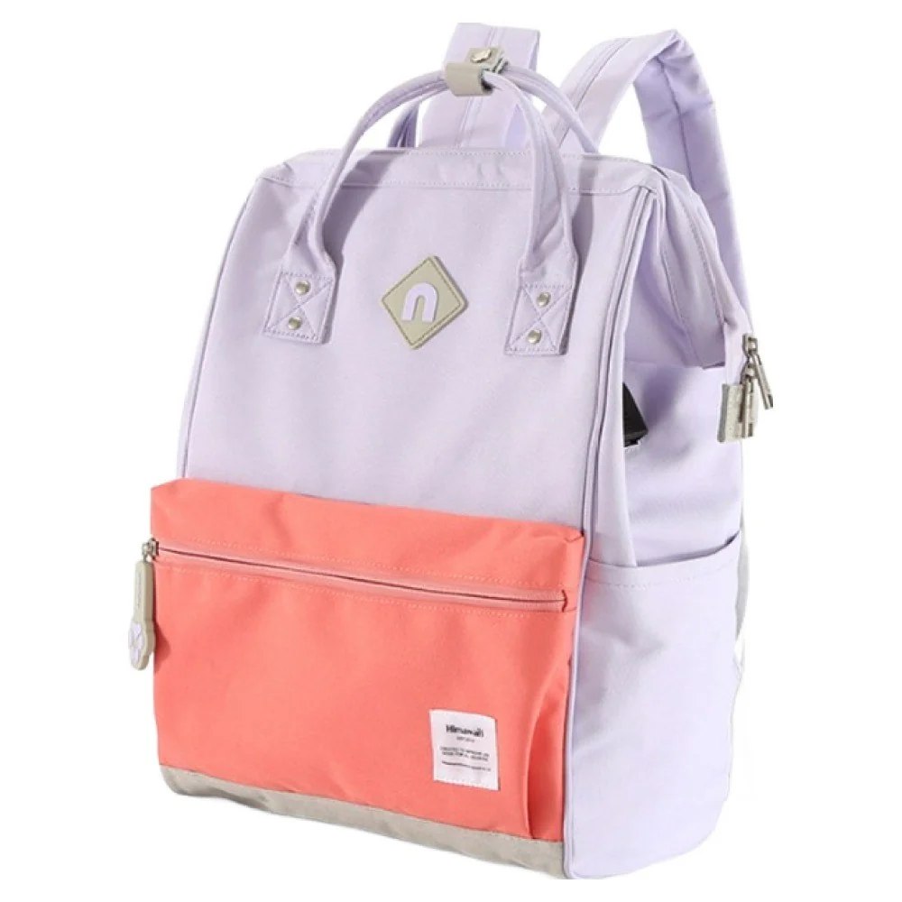

입구를 넓게 여는 백팩은 펼칠 자리도 함께 보기

가방의 입구가 넓게 열리면 안쪽을 보기 좋을 것 같아 마음이 갑니다. 그런데 매일 가방을 두는 곳이 책상 아래의 좁은 틈이라면 여밈을 끝까지 움직일 손부터 들어가야 합니다. 닫힌 백팩이 놓이는 공간과 열린 백팩을 사용하는 공간을 함께 생각해봅니다. 큰 물건이 들어가는지에 앞서 어디에 놓고 열게 될지를 정하면 제품 사진에서 필요한 장면도 달라집니다.
지금 사용하는 가방을 평소 자리에 두고 어느 쪽에서 손을 넣는지 봅니다. 책상 옆에서 몸을 숙이는지, 선반에서 내려 바닥에 놓는지, 아예 책상 위로 올리는지 떠올려보세요. 같은 가방도 놓인 높이가 달라지면 안쪽을 보는 방향이 바뀝니다. 입구가 넓어 보인다는 설명에 더해 자신의 사용 위치에서 그 넓이를 활용할 수 있는지가 선택 질문이 됩니다.
지퍼가 움직이는 길에 남길 여유
닫힌 가방의 위쪽에는 손잡이나 접힌 원단이 함께 놓일 수 있습니다. 지퍼를 여는 손이 그 사이를 지나갈 공간을 먼저 봅니다. 가방 한쪽이 벽이나 책상 다리에 가까우면 손잡이를 잡는 각도가 좁아질 수 있습니다. 힘을 주어 밀어 넣기보다 가방을 조금 앞으로 옮길 수 있는지 봅니다. 제품이 놓일 폭만으로 여는 동작까지 준비되었다고 판단하지 않습니다.
여밈이 양쪽으로 움직이는 구조라면 어느 쪽을 먼저 여는지 실제 안내에서 확인합니다. 지퍼가 여러 개 보인다고 서로 이어진 입구라고 추정하지 않습니다. 열림 범위를 담은 원본 사진이나 영상이 있다면 움직임의 끝을 볼 수 있습니다. 자료가 없다면 입구를 완전히 연 모습과 그 상태에서 필요한 공간을 물어볼 수 있습니다.
Himawari No.9004 제품 정보는 상품명에 오픈마우스 백팩으로 소개되어 있습니다. 라벤더 코랄 원본에는 위쪽 손잡이와 본체를 두른 여밈, 앞면의 코랄 배색이 보입니다. 이 사진은 닫힌 상태이므로 입구가 혼자 벌어진 채 유지되는지나 내부 프레임의 구조까지 알려주지는 않습니다. 넓게 여는 방식을 원한다면 그 동작에 관한 추가 자료를 확인한 뒤 비교해야 합니다.

책상 위에서는 본체와 손을 나누어 놓기
가방을 책상 위에 올릴 수 있는 곳이라면 물건을 꺼내기 전에 사용할 면을 봅니다. 가방 밑면이 모두 받쳐지는 자리와 꺼낸 파일을 잠시 놓을 자리가 각각 필요합니다. 좁은 책상에 본체만 겨우 올라가면 손을 넣어 물건을 잡을 때 가방을 계속 옮겨야 할 수 있습니다. 옆 사람의 영역이나 음료를 밀어내며 가방을 펼치는 방법 대신 허용된 다른 위치도 생각합니다.
입구를 연 뒤 내용물을 밖에 전부 펼칠지, 필요한 한 묶음만 꺼낼지에 따라 필요한 면적이 달라집니다. 작은 도구 하나를 찾으려고 큰 가방 전체를 책상에 올려놓아야 한다면 평소 접근할 자리를 다시 정할 수 있습니다. 넓은 입구의 장점을 쓰고 싶은 날과 짧게 여닫을 날을 구분하면 한 구조에 모든 장면을 맞추려는 부담이 줄어듭니다.
책상 모서리 가까이에서 열 때는 어느 방향으로 힘이 걸리는지도 봅니다. 본체를 한 손으로 받치고 다른 손으로 여밈을 움직여야 한다면 물건을 꺼낼 손이 추가로 필요한지 이어서 생각합니다. 이 과정에서 가방이 자립한다고 전제하지 않습니다. 제품을 실제로 놓아 볼 수 있을 때 현재 짐과 바닥 면을 기준으로 확인하고 필요한 동안 받쳐둡니다.
바닥에 두고 열 때는 보는 높이가 달라진다
바닥에서 가방을 열면 위쪽에서 안쪽을 내려다보게 됩니다. 입구를 넓게 펼쳤어도 깊은 곳의 작은 물건은 손으로 따로 찾아야 할 수 있습니다. 자주 쓰는 파우치를 한 번 잡아 꺼낼 수 있는 방향으로 두면 전체 짐을 옮길 일을 줄일 수 있습니다. 입구의 넓이와 가방 안의 정리 방식이 서로 다른 역할을 한다는 점을 현재 짐으로 살펴봅니다.
본체를 놓을 곳에는 물기나 다른 짐이 없는지 보고 끈이 발 아래로 이어지지 않게 정리합니다. 바닥이 허용된 보관 위치인지도 장소에 따라 확인합니다. 가방을 열기 편한 방향이 통로를 향한다면 위치를 돌리거나 다른 면을 골라야 할 수 있습니다. 자신에게 잘 보이는 입구와 주변 사람이 지나갈 공간을 같이 남기는 방식입니다.
No.9004의 외부 크기는 가로 28 × 세로 40 × 폭 17cm로 안내되어 있습니다. 이 수치는 가방을 둘 자리의 바깥 규모를 비교할 때 참고할 수 있습니다. 입구를 벌린 뒤 가로로 얼마나 펼쳐지는지나 내부가 어느 넓이인지는 별도 정보입니다. 선반을 재었다면 닫힌 제품이 들어갈지와 꺼내 열 공간이 있는지를 각각 확인할 수 있습니다.
매번 끝까지 열어야 하는 가방인지
물건 하나를 찾을 때 조금만 열어도 되는지, 여밈을 충분히 풀어야 손이 들어가는지는 실제 구조와 자신의 짐에 달려 있습니다. 사용하는 기기나 파일이 큰 날에는 넓은 입구가 중요한 조건이 될 수 있습니다. 반면 교통카드만 찾는 순간에는 별도 위치가 편할 수 있습니다. 매일 꺼낼 큰 물건 하나와 반복해서 찾을 작은 물건 하나로 두 동작을 비교해봅니다.
실물을 볼 수 있다면 가방을 평소 둘 높이에 놓고 안내된 범위에서 여밈을 움직입니다. 손잡이를 옮겨야 했는지, 가방을 몸 쪽으로 당겨야 했는지, 꺼낸 자료를 둘 면이 있었는지 남깁니다. 자연스럽게 여닫은 범위가 자신에게 맞는지 보는 것이 목적입니다.
가방을 넣을 가구의 크기가 딱 맞아도 매번 다른 곳으로 옮겨 열 수 있다면 사용이 가능할 수 있습니다. 다만 그 이동을 하루에 몇 번 반복할지 생각해봅니다. 현재 가방에서 입구를 더 열고 싶었던 이유가 안쪽을 보기 위해서인지, 큰 파일이 걸려서인지 먼저 남겨두세요. 새 후보의 열림 방식과 사용 장소를 같은 질문으로 비교할 수 있습니다.